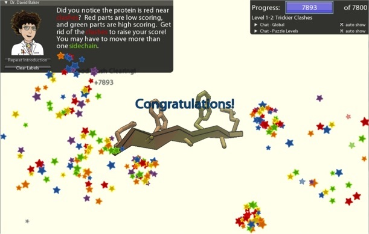
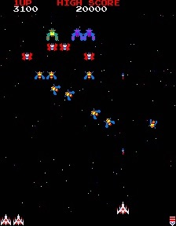
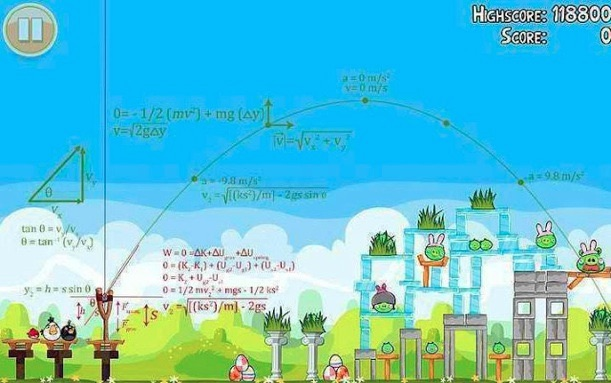
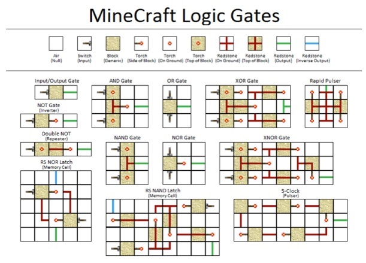
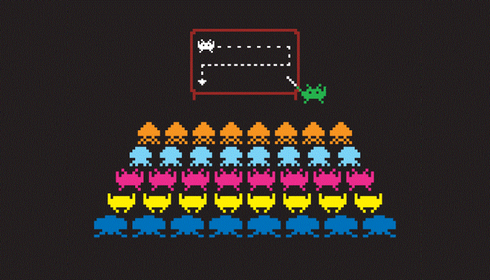

Cafe Scientifique - Games and Brains
Sunday, April 21, 2013
Yesterday I did a very well received talk for Cafe Scientifique at The Rivoli in downtown Toronto. The topic of debate was entitled: Playing Games with our Brains: Are Games more important than we think? Are games necessary for our brains?
The format of the event involved presenting material for about 20 minutes, followed by a break, and then about an hour of questions and discussion related to the material. My favorite part was the question and discussion period afterwards. Much of the audience were educators and/or computer science and IT geeks, and this really shone through during the discussion. Unfortunately, I can’t remember many of the details from the question and discussion period to repeat in this blog post, but I’ll post the parts of my actual presentation that I can remember....enjoy!
As an educator, I’m very interested in how games can make learning faster and more effective. As an IT professional who has published video games, I understand the flexibility and limitless possibilities that the video game medium provides beyond that of traditional games, so I’ll focus on video games in my arguments. More specifically, I’m going to argue that video games are vital to cognitive development and the learning process itself.
My favorite perspective regarding video games and learning comes from James Paul Gee – who teaches linguistics in the U.S. Simply put:
We take it as completely natural that you would be in an Algebra class for 12 weeks, and then I would give you a test on Algebra .... to see if you learned any Algebra. Let’s say a kid plays Halo on Hard .... and finishes Halo. Would you be tempted to give him a Halo test? No. Not at all. You’d say the game already tested him. So let’s think - Why is it that we’re not tempted to give him a Halo test, but we are tempted to give that Algebra test and use that as a judgement? We’ll its because you actually trust the design and learning of Halo better than you trust the design and learning of that Algebra class.
Games are just a series of challenges that you have to overcome to get to the next level, or get some sort of positive reinforcement. They have constant feedback – to get to the next level or win the game, you have to accomplish something, and the mere fact that you did is the test. Some people take longer than others to learn what it takes to complete a challenge, but learning is an important part of every game.
They key is that games involve challenges that people want to engage with. As an educator for the past 15 years, I know that people who are engaged are the best learners – they learn more effectively, and retain far more because there was meaning attached to what they were learning. In other words, they are able to encode material to long term memory because there was meaning attached to the material, as well as retrieve that material using the meaning as a mental cue.
I always tell my students that people generally like to learn, but they don’t like to be educated. Putting the word “educational” on a game lowers its sales – that’s a well-known fact in the video game industry.
Video games essentially have the power to engage learners like no other medium has done in the past – you’re not just reading about something, or watching something unfold on a television screen – you are interacting with it, learning from mistakes, building things, and so on. And, as I mentioned before, engagement is crucial to learning effectively – this makes them important for learning, and vital for education moving forward in the future.
I was never someone who liked history in high school. History involved writing down a plethora of notes from the chalk board as our boring teacher wrote them down. I’m sure there are many high school kids today who are the same. But today, those kids could play Assassin’s Creed - a game that takes place in historically correct time periods such as the Third Crusade, the Renaissance and American Revolution (shown in the game screenshot below) – and there are real historical figures from those times in the game that are woven into the plot. These kids who don’t like history are suddenly finding themselves engaged in it to the point where they want to learn more. It’s getting as much praise today from history teachers as it is from the general gamer community – and teachers are using it all over Canada to engage their students.
Some people have argued that as we have moved towards an industrialized society over the past two centuries, we have lost a sense of gratification that came from learning how to do a job well. For example, if you were a carpenter, you probably learned techniques that made you a better carpenter each day, and took great pride in your work. Today, a cost accountant who hates their cubicle-trapped 9-5 job, may look to video games for mental stimulation and other rewarding experiences. They may be a cost accountant by day, but by night they could be the top wizard in an online world, learning and achieving more and more every day.
It is also important to note that game learning works! By playing a game developed by scientists at the University of Washington called Foldit (http://fold.it), gamers were able to map out a protein that causes AIDS in rhesus monkeys in just 10 days….a problem that stumped scientists for over 10 years!

Why was Foldit successful? Because people weren’t looking for the protein, they were looking to learn the rules of the game that allowed them to build the next part of the protein – they were working together to see if they could accomplish something, while at the same time trying to accomplish it faster than their fellow players. And the game gave them constant feedback along the way to make them feel that they got to “the next level” – it’s this constant feedback that is lacking in James Paul Gee’s example of our traditional assessment-based educational system. Moreover, gamers today are able to tackle huge problems - online games have hundreds of intricate rules, and existing players are very efficient at communicating those rules to new players. As a result, the acclimation of a complex game such as Foldit is far less than you would ever imagine.
The U.S. military spends a billion dollars a year on game-based learning, because it is the most effective way of learning - a simulation where players can experience mistakes is far better than a training course with someone telling you what to expect. The U.S. military even paid Atari to create a custom version of their Battlezone arcade game for use in simulations back in the early 1980s. And let’s not forget the movie War Games (1983), where the army mainframe contained a variety of games used to teach strategy.
I believe that exploration and learning are at the heart of every video game, from the arcade games of the early 1980s to the wide range of different games available today on consoles, PCs, the Web and mobile devices. I also believe that this exploration and learning is why people play games. As humans, we have an appetite for learning - when we learn something through experience, it makes us feel good. And the challenges and feedback structure of engaging games is what drives us to play them and feel good afterwards. It’s also why they are very effective in a learning environment.

If you look at any video game, you see that learning is at the core of the experience. For example, let’s take an early 80s arcade game like Galaga. The goal is to score as many points as you can and kill all of the aliens in order to get to the next harder level – but in order to do that you have to observe common patterns and learn a wide variety of different strategies in order to avoid the waves of enemy fire, as well as gameplay tricks such as how to get captured by an enemy Galaga, shoot your captor and get double ships and double guns. People like games like Galaga because they like to learn strategy, and Galaga allows them to build strategic skills almost indefinitely! In Nolan Bushnell’s words, a good game rewards the first quarter, and the hundredth! (Nolan is the founder of Atari and creator of Pong).The famous Xbox game, Halo, forces the player to explore a world and work together with other players to defeat alien enemies and solve the mystery of the Halo. The game is attractive because you are essentially playing a great story – a novel – and you have to learn plenty of things in order to complete the game, from learning how to thwart enemy intelligence to how to drive an alien vehicle in order to get to the heart of the Halo.
Modern mobile games (e.g. Angry Birds) also involve learning - you must figure out how to shoot projectiles to destroy targets within a realistic world that implements similar mechanics: gravity, friction, force of slingshot, angle of slingshot, different materials collapse different ways, etc. These are mathematical and Newtonian physics principles that we apply in our real world - for example, take a look at the equations that represent the following Angry Birds shot:



I’ve always been an advocate of lifelong learning, and to do this, you have to continually learn things out of your comfort zone. Twice a year, I immerse myself in something that I know absolutely nothing of with the aim to become close to an expert in the material. It keeps me excited and engaged, and it definitely keeps my mind sharp. In order to tackle something new, however, you have to WANT to do it. Video games are a medium that essentially provides this WANT, and the structure that keeps you learning as you progress to newer levels. Kit Connell is a great example of how video game learning can keep your mind sharp - watch her story here: http://www.youtube.com/watch?v=nawe7F8cZ_U

